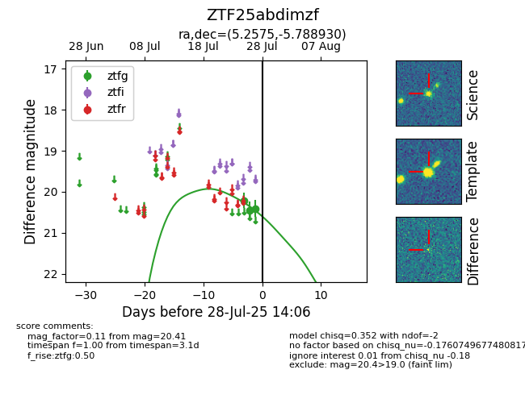

Target ZTF25abdimzf at 2025-07-28 14:06, see:
FINK: fink-portal.org/ZTF25abdimzf
Lasair: lasair-ztf.lsst.ac.uk/objects/ZTF25abdimzf
ALeRCE: alerce.online/object/ZTF25abdimzf
alt names
ZTF25abdimzf (ztf,fink)
coordinates:
equatorial (ra, dec) = (5.2575,-5.78893)
galactic (l, b) = (102.8446,-67.46708)
photometry
last ztfg=20.41
3 ztfg detections
